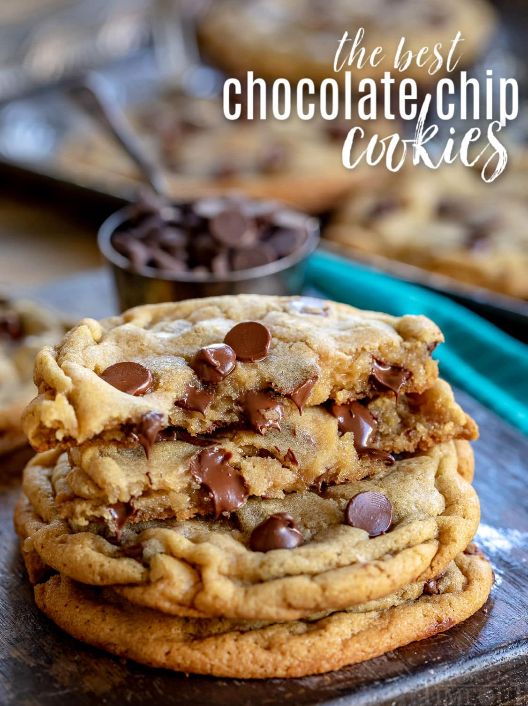

Cookies Recipe

A Classic and delicious cookie recipe
We all have a history with traditional cookies. We enjoyed them when we were kids, sometimes learnt to bake them with our mom or dad, we share them with our friends or used them when we were sad as comfort food,...
The simple reality of it is that we all love them, but time being what it is, when we want to bake them, we often forgot how to do it. So here is a humble walkthrough the steps of baking those little pleasures.
Ingredients
- 220 g Flour
- 185 g Brown Sugar
- 15 g vanillated Sugar
- 1 Median Egg
- 115 g Softened Butter
- 1/2 CS Baking Powder and bicarbonate
- A pinch of Salt
- At least a handful of chocolate chips
Steps
- Preheat the oven at 140°C. leave out the rack
- Mix together in a bowl the butter, the sugars and the egg, till the dough is soft
- In a mixing bowl, stir up the Flour, Baking Powder, salt and bicarbonate
- Pull the dough in the mixing bowl, and mix till you get a homogenous and smooth texture. Then, add the chocolate and stir up again quickly.
- Take the dough in your hands and form a tubeof approximately 20 cm. Then, cup 20 disks in it of 1cm width.
- Put some baking paper on the racks, then take a disk, roll it in your hands to form a slitely flattened ball, and put it on the paper. Then go again till all the balls are on the rack with some space in between them.
- Bake for 15-17 min., till the cookies exteriors are very slightly goldened, then let them cool for at least 30 min.
- Enjoy !